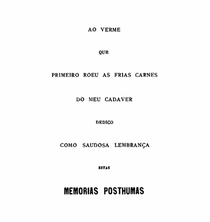
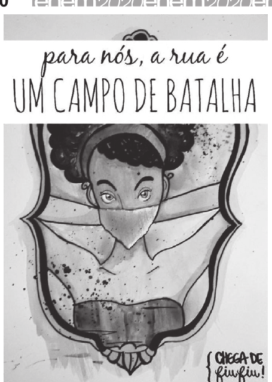
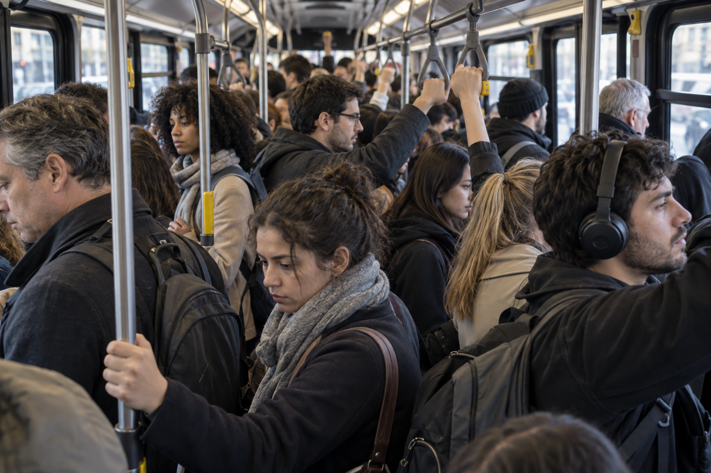
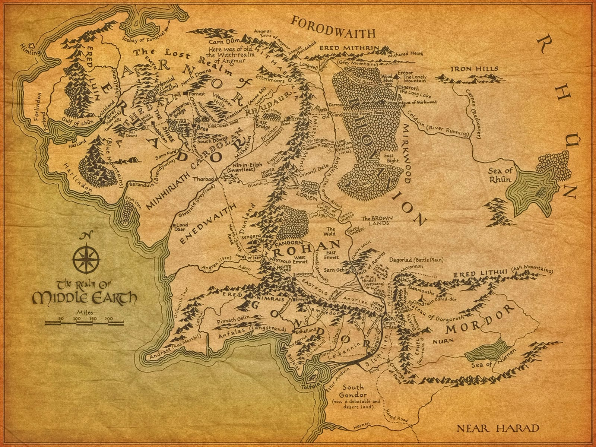
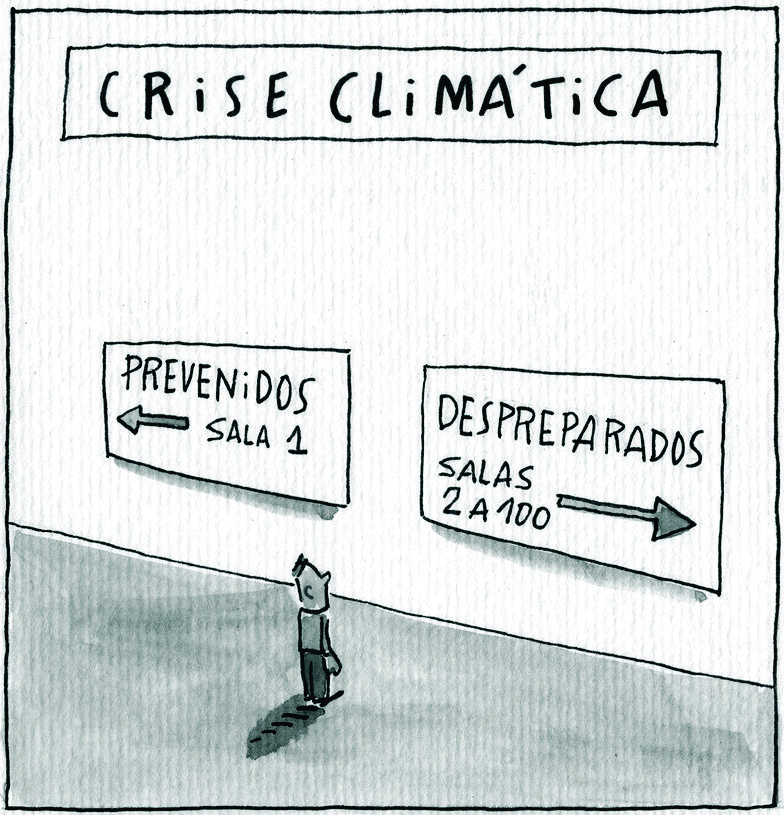

PLANO DE ESTUDO LINGUÍSTICO E DA LÍNGUA PORTUGUESA
TÓPICO 1.2 • FUNDAMENTOS DA LINGUAGEM
LINGUAGEM VERBAL, NÃO VERBAL E MULTIMODAL
APOSTILA DE ESTUDO — 2026
Texto Teórico
· Parte 1
O VERBAL NÃO É A VOZ: ORGANIZAÇÃO LINGUÍSTICA E FORMAS DE REALIZAÇÃO
Se a linguagem organiza recursos perceptíveis e compartilháveis para produzir e interpretar sentidos, surge uma questão importante: esses recursos precisam ser necessariamente sonoros ou produzidos pela voz?
A associação parece natural. Quando se ouve a expressão linguagem verbal, é fácil pensar numa conversa, numa aula ou numa pessoa pronunciando palavras. Nesses casos, a língua se torna perceptível por meio de sons produzidos pelo corpo e percebidos pela audição.
Mas considere um enunciado simples:
Feche a porta, por favor.
Uma pessoa pode pronunciá-lo. Também pode escrevê-lo num bilhete. Outra pessoa pode encontrar essa frase numa tela e lê-la silenciosamente.
No primeiro caso, há voz. Nos demais, não.
Ainda assim, um leitor de português pode reconhecer a frase escrita como uma manifestação linguisticamente organizada. O desaparecimento da voz não fez desaparecer a língua.
Esse contraste revela que duas perguntas diferentes estavam sendo confundidas:
Como uma manifestação se torna perceptível?
e
Que tipo de organização permite reconhecê-la linguisticamente?
Separar essas perguntas é o primeiro passo para compreender por que verbal não pode ser reduzido a falado.
1. Por que verbal não significa simplesmente falado
Quando alguém pronuncia:
Feche a porta, por favor.
o enunciado possui uma realização sonora. Há movimentos dos órgãos envolvidos na fala, produção de ondas sonoras e percepção auditiva.
Mas ser sonoro não basta para tornar alguma coisa linguística.
Uma buzina produz som. Um trovão também. Uma cadeira arrastada pelo chão pode produzir um ruído perfeitamente perceptível.
Nenhum desses acontecimentos se torna uma frase apenas porque pode ser ouvido.
No enunciado falado, há algo além da materialidade sonora: quem conhece português reconhece formas linguisticamente organizadas. Feche, a, porta e por favor não são apenas acontecimentos acústicos sucessivos. Elas participam de uma organização que os usuários da língua conseguem produzir, reconhecer e interpretar.
Agora considere novamente a mesma frase, desta vez escrita:
Feche a porta, por favor.
A manifestação mudou materialmente. Não há voz saindo do papel ou da tela. Há marcas gráficas distribuídas no espaço e percebidas pela visão.
Entretanto, a frase continua podendo ser reconhecida como português.
Isso já basta para mostrar que:
linguístico não é sinônimo de sonoro.
A escrita também permite perceber outro problema. Se tudo o que fosse visual tivesse de ser classificado como não verbal, qualquer palavra escrita deixaria de ser linguística simplesmente porque chega aos olhos.
Mas não é isso que acontece.
Uma palavra escrita possui forma visual e, ao mesmo tempo, participa da organização de uma língua.
Portanto, visual e linguístico não são categorias opostas.
2. Formas diferentes de tornar a língua perceptível
Podemos organizar alguns casos lado a lado:
Caso
Há organização linguística?
Como se torna perceptível neste caso?
Português falado
Sim
pela fala, em realização oral-auditiva
Português escrito
Sim
por marcas gráficas percebidas visualmente
Libras
Sim
por sinalização em modalidade visual-gestual
O quadro mostra uma relação importante, mas precisa ser lido com cuidado.
Ele não afirma que fala, escrita e sinalização sejam fenômenos idênticos ou três versões perfeitamente equivalentes de uma mesma modalidade.
A fala e a sinalização mostram que as línguas humanas não estão restritas a uma única modalidade de produção e percepção: existem línguas faladas e línguas sinalizadas. A escrita coloca outro problema, porque é um sistema gráfico relacionado à língua e possui propriedades próprias. Ela não deve ser tratada simplesmente como um canal neutro que reproduz a fala.
Para o problema atual, porém, os três casos permitem perceber algo em comum:
a maneira material pela qual encontramos uma manifestação não determina, sozinha, se há organização linguística.
A matéria importa. Uma palavra falada não se comporta materialmente como uma palavra escrita; uma língua sinalizada também explora possibilidades diferentes daquelas oferecidas pela fala.
O erro seria transformar essas diferenças materiais em um critério simples para decidir onde existe ou não existe língua.
3. A escrita é visual sem deixar de ser linguística
Observe a inscrição:
CUIDADO
Ela possui uma existência gráfica. As letras têm forma, tamanho e posição. Podemos aumentar seu corpo, alterar o espaçamento, mudar a tipografia ou colocá-la em outra parte da página.
Tudo isso pertence à maneira concreta pela qual a inscrição se apresenta visualmente.
Mas reconhecer CUIDADO como uma palavra envolve outra dimensão.
Imagine alguém capaz de enxergar perfeitamente a inscrição, mas que não conheça o alfabeto utilizado nem português. Essa pessoa ainda poderá perceber:
linhas e curvas;
diferenças entre caracteres;
repetições;
contraste com o fundo;
distribuição espacial.
Ela pode ver a inscrição sem conseguir reconhecê-la linguisticamente.
Isso permite distinguir duas operações.
Uma coisa é perceber a configuração material.
Outra é reconhecer naquela configuração formas pertencentes a uma língua.
Por isso, uma mesma manifestação pode ser descrita simultaneamente como visual e linguística sem qualquer contradição.
Quando dizemos que algo é visual, estamos falando de uma dimensão de sua percepção e de sua materialidade.
Quando dizemos que algo é linguisticamente organizado, estamos perguntando se aquela manifestação mobiliza uma língua.
Misturar essas duas perguntas cria classificações enganosas.
Considere, por exemplo, duas coisas apresentadas numa página:
PORTA
e, ao lado dela, um círculo vermelho.
Ambas são visíveis. Ambas possuem forma, tamanho e posição.
Mas a palavra porta pode ser reconhecida como uma forma do português. O círculo vermelho, considerado isoladamente, não se transforma por isso numa palavra dessa língua.
A diferença não está no fato de uma coisa ser visual e a outra não. As duas são visuais.
A diferença relevante está no tipo de organização que cada uma mobiliza.
4. Línguas de sinais: quando língua não depende da voz
A escrita já é suficiente para mostrar que língua e voz não são equivalentes. As línguas de sinais tornam essa distinção ainda mais decisiva.
A Língua Brasileira de Sinais — Libras — é uma língua natural de modalidade visual-gestual. Isso significa que sua produção não depende da modalidade oral-auditiva característica das línguas faladas.
A sinalização mobiliza principalmente recursos corporais percebidos visualmente. As mãos participam dessa produção, mas não são os únicos elementos envolvidos: a própria organização linguística da língua sinalizada pode explorar diferentes articuladores e o espaço disponível à sinalização.
O ponto importante neste momento não é estudar como a estrutura interna de Libras funciona. Basta reconhecer uma consequência fundamental:
uma língua humana não precisa ser produzida pela voz para possuir organização linguística.
Libras também não é uma versão do português em que palavras teriam sido simplesmente substituídas por movimentos das mãos. Trata-se de uma língua com organização própria.
Essa afirmação impede que a modalidade visual-gestual seja compreendida como uma espécie de tradução corporal de uma língua falada.
Ao mesmo tempo, reconhecer Libras como língua não significa que a modalidade deixe de importar.
Línguas faladas e sinalizadas apresentam diferenças relacionadas às possibilidades materiais de sua produção e percepção. O espaço, a visão, o movimento e a possibilidade de articular informações simultaneamente podem participar de maneiras particularmente importantes das línguas sinalizadas.
A conclusão, portanto, não é:
a materialidade é irrelevante.
É outra:
a materialidade influencia a maneira como uma língua se realiza, mas não determina, sozinha, se há ou não organização linguística.
5. Língua de sinais não é qualquer gesto
Outra confusão surge porque línguas de sinais e gestos espontâneos podem utilizar mãos, rosto, corpo e espaço.
Uma pessoa pode apontar para uma cadeira.
Pode fazer um movimento para pedir que alguém se aproxime.
Pode afastar a mão diante de algo que rejeita.
Pode encolher os ombros diante de uma pergunta.
Essas manifestações podem produzir sentidos. Algumas podem até ser amplamente reconhecidas numa comunidade.
Mas utilizar o corpo para significar não basta para transformar qualquer movimento numa unidade de uma língua de sinais.
Compare isso com a fala.
Tossir produz um som pelo corpo.
Pronunciar uma frase também.
O fato de ambos produzirem sons não faz da tosse uma palavra.
De modo semelhante, mover as mãos pode participar de inúmeros comportamentos comunicativos sem que todo movimento manual pertença a Libras.
Quando uma pessoa sinaliza em Libras, mobiliza recursos linguisticamente organizados e compartilhados por usuários dessa língua. Ela não precisa inventar, a cada interação, movimentos particulares para reconstruir do zero aquilo que pretende expressar.
Um gesto espontâneo pode igualmente possuir função comunicativa e não deve ser tratado como movimento sem organização, intenção ou valor. Há gestos convencionais, gestos fortemente dependentes da situação e gestos que acompanham manifestações linguísticas.
A distinção, portanto, não deve ser transformada numa oposição grosseira entre:
língua = organização
e
gesto = ausência de organização.
O ponto mais preciso é:
um movimento corporal não adquire estatuto linguístico simplesmente por produzir sentido.
Língua de sinais e gestualidade podem utilizar a mesma região material — mãos, rosto, corpo e espaço — sem por isso constituírem exatamente o mesmo tipo de organização.
Mais uma vez, a aparência física do recurso não basta para decidir sua natureza.
6. “Verbal” e “linguístico”: uma distinção terminológica necessária
Nesse ponto, a própria palavra verbal exige cautela.
O termo não é empregado de maneira perfeitamente uniforme. Em alguns contextos, verbal aparece associado de maneira mais estreita à fala; em outros, recebe um uso mais amplo para aquilo que pertence a uma língua, inclusive quando essa língua é sinalizada.
Por isso, não é produtivo tratar uma dessas utilizações como se fosse a única possível em qualquer tradição ou contexto.
Nesta apostila, verbal será preservado como categoria curricular ampla, mas o termo linguístico será preferido sempre que for necessário distinguir com precisão a organização de uma língua de sua materialidade.
Podemos, então, estabelecer a seguinte definição de trabalho:
Uma manifestação será tratada como verbal, em sentido curricular amplo, quando sua produção e interpretação mobilizarem uma língua natural. Quando a modalidade material puder gerar ambiguidade, utilizaremos preferencialmente o termo linguístico.
Essa definição não transforma fala, escrita e sinalização em fenômenos idênticos.
Também não afirma que uma língua qualquer possa simplesmente ser transferida para qualquer materialidade sem transformação.
Sua função é mais restrita: impedir que voz seja usada como critério necessário para reconhecer organização linguística.
7. Duas dimensões que não devem ser confundidas
Podemos agora retornar à questão inicial.
Uma frase pronunciada em português é linguisticamente organizada e, naquele caso, realiza-se oralmente.
Uma frase escrita em português também é linguisticamente organizada, embora sua presença material seja gráfica e percebida visualmente.
Um enunciado em Libras é linguisticamente organizado e realiza-se numa modalidade visual-gestual.
Essas descrições não pertencem todas ao mesmo eixo.
Quando perguntamos:
Há organização pertencente a uma língua?
estamos investigando o estatuto linguístico da manifestação.
Quando perguntamos:
De que maneira ela se torna materialmente disponível à percepção?
estamos investigando sua realização.
As respostas podem se combinar.
Algo pode ser:
visual e linguístico;
corporal e linguístico;
sonoro e não linguístico;
visual e não linguístico.
Por isso, não podemos concluir que algo é não linguístico apenas porque é visual.
Também não podemos concluir que algo é linguístico apenas porque utiliza sons, letras, mãos ou movimentos.
A matéria fornece possibilidades e limites importantes, mas a organização não pode ser deduzida apenas da aparência física do recurso.
A questão inicial encontra, assim, uma resposta mais precisa:
ser linguisticamente organizado não depende de ser produzido pela voz.
A fala é uma forma possível de realização linguística.
A escrita mostra que uma manifestação pode ser visual e continuar relacionada à organização de uma língua.
As línguas de sinais mostram de maneira ainda mais decisiva que a linguagem humana não está presa à modalidade oral-auditiva.
Mas essa conclusão produz outra pergunta.
Se palavras escritas são visuais sem deixar de ser linguísticas e se uma língua sinalizada também utiliza recursos visuais e corporais linguisticamente organizados, então visual não pode ser sinônimo de não verbal.
Imagens, gestos espontâneos, sons não linguísticos, silêncios e disposições espaciais também podem participar da produção de sentidos. Resta compreender o que acontece quando esses recursos significam sem depender, naquela ocorrência, da organização de uma língua natural.
Texto Teórico
· Parte 2
O NÃO VERBAL NÃO É UM CÓDIGO ÚNICO: RECURSOS, CONVENÇÕES E INTERPRETAÇÃO
Se algo pode ser visual e, ao mesmo tempo, linguisticamente organizado, então a simples oposição entre verbal e visual não basta para compreender as diferentes maneiras pelas quais sentidos se tornam perceptíveis.
Uma palavra escrita é visual, mas mobiliza uma língua. Uma língua de sinais utiliza movimentos corporais percebidos visualmente, mas esses movimentos também são linguisticamente organizados. Portanto, quando usamos a expressão não verbal, precisamos fazer uma distinção mais cuidadosa.
Considere alguns casos:
uma pessoa aponta para uma cadeira;
um alarme começa a soar;
uma fotografia mostra uma estrada interrompida;
uma pessoa permanece em silêncio depois de uma pergunta;
uma seta orienta o percurso até uma saída;
duas cadeiras são colocadas frente a frente, enquanto uma terceira permanece afastada.
Em nenhum desses casos é necessário formar uma frase para que algum aspecto da situação possa orientar uma interpretação. Gesto, som, imagem, silêncio e organização espacial podem participar da produção de sentidos.
Isso, porém, não significa que todos funcionem da mesma maneira.
Também não significa que constituam, juntos, uma espécie de língua paralela em que cada gesto, cor, imagem ou som corresponderia a um significado pronto.
É justamente aí que a expressão não verbal pode enganar. Ela é útil para marcar uma diferença inicial, mas reúne sob um único nome fenômenos extremamente diversos.
1. O problema da expressão “não verbal”
Podemos utilizar não verbal como uma categoria de trabalho para recursos de significação que, no funcionamento analisado, não dependem primariamente da organização de uma língua natural.
Essa definição é propositalmente ampla.
Ela pode incluir:
imagens;
gestos;
posturas;
expressões corporais;
sons não linguísticos;
silêncios;
movimentos;
cores;
formas;
relações espaciais.
A lista, entretanto, não forma uma classificação de elementos equivalentes.
Uma fotografia não funciona como um gesto.
Um gesto não funciona como um alarme.
Um alarme não funciona como a distribuição espacial de objetos numa sala.
Um silêncio não funciona simplesmente como uma imagem sem forma.
O que aproxima esses casos é apenas uma característica muito geral: em determinada ocorrência, eles podem participar da construção de sentidos sem depender, para isso, do reconhecimento de palavras e relações pertencentes a uma língua.
A expressão não verbal, portanto, diz menos do que parece. Ela informa aquilo de que estamos nos afastando — a organização linguística —, mas não explica sozinha como funciona aquilo que foi reunido sob esse rótulo.
Essa diferença impede que imaginemos uma espécie de “dicionário do não verbal”:
Fórmulas desse tipo são atraentes porque transformam situações complexas em traduções rápidas. O problema é que tratam uma possibilidade interpretativa como se fosse uma relação automática.
Para compreender por quê, precisamos observar não apenas qual recurso está presente, mas como ele aparece numa situação concreta.
2. Recursos diferentes não produzem sentidos do mesmo modo
Imagine uma fotografia de uma praça.
Ela pode apresentar simultaneamente edifícios, pessoas, distâncias, posições, luminosidade, vestimentas e relações espaciais. O observador não precisa receber essas informações uma de cada vez: grande parte delas está disponível conjuntamente na superfície da imagem.
Agora imagine uma campainha.
Ela não apresenta espacialmente os objetos de um ambiente. Seu funcionamento depende de outra propriedade: um acontecimento sonoro surge no tempo e pode atrair a atenção ou indicar que alguma coisa aconteceu.
Um gesto de apontar realiza outra operação. Em determinada situação, ele pode orientar a atenção para uma pessoa, um objeto ou uma direção.
A disposição dos elementos num espaço também pode participar da interpretação. Numa sala de espera, por exemplo, cadeiras voltadas para um balcão organizam corporalmente uma relação diferente daquela criada por cadeiras distribuídas em círculo.
Esses casos mostram por que seria insuficiente colocar tudo numa única categoria e concluir apenas:
“São formas de linguagem não verbal.”
A classificação não explica o funcionamento.
Cada recurso torna certas relações particularmente perceptíveis e deixa outras menos determinadas.
Uma fotografia pode mostrar muito bem que duas pessoas estavam próximas uma da outra no instante registrado, mas talvez não permita saber por que estavam próximas.
Uma seta pode indicar uma direção de maneira muito econômica, mas não explica necessariamente a razão daquele percurso.
Um alarme pode chamar a atenção imediatamente, mas seu som, sozinho, pode não informar o que exatamente aconteceu.
Um gesto pode orientar uma ação sem precisar de uma frase completa, mas sua interpretação pode depender fortemente de quem o realizou, para quem e em que circunstância.
Não existe, portanto, uma oposição simples em que o verbal seria “complexo” e o não verbal seria “imediato”.
Existem recursos diferentes, com possibilidades e limites diferentes.
3. O sentido não está gravado no recurso
Considere o silêncio.
Durante uma cerimônia em homenagem a alguém que morreu, várias pessoas permanecem caladas ao mesmo tempo. O silêncio pode estar ligado a uma prática coletiva de respeito e recordação.
Agora imagine outra situação.
Durante uma conversa, alguém pergunta:
Você contou aquilo para ela?
A outra pessoa não responde.
Há novamente silêncio.
Fisicamente, podemos descrever nos dois casos uma ausência de fala durante determinado intervalo. Mas seria inadequado concluir que os dois silêncios “significam a mesma coisa”.
No primeiro caso, existem elementos da própria situação que orientam fortemente a interpretação: o caráter cerimonial, a ação coletiva, o momento previsto para permanecer calado.
No segundo, as possibilidades são muito mais abertas. A pessoa pode estar hesitando, recusando-se a responder, tentando lembrar alguma coisa, surpresa com a pergunta ou simplesmente esperando antes de falar.
O silêncio constitui uma evidência.
Ele não entrega sozinho uma explicação completa.
A mesma cautela vale para posturas corporais.
Imagine uma pessoa sentada com os braços cruzados.
Essa configuração pode participar de uma interpretação de fechamento ou resistência em determinada interação. Mas pode também ocorrer porque a pessoa está com frio, porque aquela posição lhe é confortável ou simplesmente porque não sabe onde apoiar os braços.
Observar a postura autoriza afirmar:
a pessoa está com os braços cruzados.
Explicar por que ela assumiu aquela postura exige mais informações.
A diferença parece pequena, mas é decisiva:
observar não é o mesmo que interpretar.
Uma interpretação pode ser bem fundamentada sem ser uma descrição direta do que está diante dos olhos.
Por isso, a força da conclusão precisa acompanhar a força das evidências.
Se alguém cruza os braços imediatamente depois de rejeitar uma proposta, afasta o corpo, interrompe o contato visual e encerra a conversa, o conjunto oferece mais apoio para determinada interpretação do que a postura isolada.
Ainda assim, é diferente dizer:
“esses elementos sustentam uma leitura de afastamento”
e dizer:
“os braços cruzados revelam exatamente o que a pessoa está pensando”.
A segunda afirmação transforma uma pista em acesso direto à mente.
O comportamento corporal não funciona dessa maneira.
Convenção não é natureza
Outro problema aparece quando uma interpretação se torna tão familiar que parece pertencer naturalmente ao próprio recurso.
Pense num sinal luminoso vermelho em determinado sistema de trânsito.
Nesse sistema, sua presença pode orientar a ação de parar.
Isso não acontece porque a cor vermelha possua fisicamente, dentro dela, a ordem pare.
A relação foi socialmente estabilizada dentro de uma prática.
A prova é que a mesma cor pode aparecer numa camiseta, numa parede, numa pintura ou numa embalagem sem produzir automaticamente a mesma instrução.
O recurso físico permanece semelhante.
Sua função muda.
Chamamos relações desse tipo de convencionais quando dependem, em alguma medida, de práticas compartilhadas que os participantes precisam conhecer.
Convenção não significa arbitrariedade completa.
Depois de estabelecida e aprendida, uma convenção pode orientar comportamentos de maneira muito estável. Ignorar um sinal de trânsito porque “toda interpretação depende do contexto” seria confundir flexibilidade interpretativa com ausência de regularidade.
O contexto não faz qualquer coisa significar qualquer coisa.
Ele ajuda a determinar quais relações são relevantes naquele caso.
Também não devemos presumir que todas as convenções se distribuam igualmente entre sociedades, épocas ou grupos. Gestos aparentemente simples podem variar culturalmente, inclusive em suas associações entre forma e significado. Por isso, um gesto reconhecível numa comunidade não deve ser automaticamente tratado como mensagem humana universal.
O ponto pode ser formulado assim:
convencional não é o mesmo que natural; variável não é o mesmo que arbitrário.
Imagens também precisam ser interpretadas
Pode parecer que uma imagem é diferente porque “mostra diretamente” alguma coisa.
Uma fotografia de uma ponte destruída realmente pode tornar visíveis diversos aspectos de sua aparência: materiais quebrados, posição das estruturas, objetos próximos, talvez a presença de pessoas ou veículos.
Mas ela não informa necessariamente:
qual ponte é aquela;
quando a fotografia foi feita;
o que causou a destruição;
quem produziu a imagem;
o que aconteceu antes;
o que aconteceu depois;
com que finalidade a fotografia está sendo apresentada.
A imagem oferece evidências. Não elimina a necessidade de interpretação.
Nem sequer aquilo que parece emocionalmente evidente precisa ser reduzido a uma tradução automática.
Um sorriso pode participar de alegria, cordialidade, constrangimento, ironia, apaziguamento ou outras ações sociais. Isso não quer dizer que toda leitura seja igualmente boa. Significa apenas que a forma observada precisa ser relacionada ao restante da situação antes que se conclua o que ela está fazendo ali.
Assim, uma imagem não “fala por si” no sentido de dispensar qualquer conhecimento do observador.
Ela pode ser extremamente informativa sem ser autossuficiente.
4. Aquilo que percebemos e aquilo que concluímos
Esses exemplos permitem estabelecer uma diferença útil.
Podemos descrever:
uma pessoa desviou o olhar.
E depois interpretar:
ela parece desconfortável.
As duas afirmações não têm a mesma força.
A primeira descreve um comportamento perceptível.
A segunda propõe uma explicação possível para esse comportamento.
Essa interpretação pode estar muito bem apoiada. Imagine que a pessoa recue, hesite, diminua a voz e tente encerrar imediatamente uma conversa. O conjunto torna uma leitura de desconforto mais plausível.
Ainda assim, continua existindo uma passagem entre:
o que foi observado
e
o que se concluiu a partir disso.
Essa passagem não é um defeito.
Interpretar faz parte de compreender situações humanas.
O problema aparece quando apagamos a passagem e tratamos nossa conclusão como se ela estivesse diretamente inscrita no gesto, na imagem, na cor ou no silêncio.
Uma análise mais rigorosa pergunta:
Que elemento está realmente presente?
Que interpretação ele sustenta?
Que outras informações fortalecem essa interpretação?
Que informações poderiam enfraquecê-la?
Esse procedimento evita dois extremos.
O primeiro é imaginar que cada recurso possui um significado fixo.
O segundo é imaginar que, como interpretações podem variar, qualquer interpretação seria possível.
Nenhuma das duas conclusões é adequada.
As interpretações variam, mas continuam submetidas a evidências e restrições.
5. O mesmo recurso pode fazer trabalhos diferentes
Quando observamos recursos não verbais em situações distintas, aparece outra característica importante: não basta reconhecer sua forma; precisamos compreender o trabalho que realizam naquela ocorrência.
Um apontar pode:
indicar onde está determinado objeto;
selecionar uma pessoa;
orientar um percurso;
chamar a atenção;
acusar;
coordenar uma atividade.
Isso não significa que apontar não possua nenhuma regularidade.
Significa que sua função precisa ser observada dentro da interação em que ocorre.
O mesmo vale para a organização espacial.
Imagine três pessoas diante de uma mesa.
Se todas estão lado a lado, voltadas para um mesmo objeto, a disposição espacial favorece determinada configuração de atenção.
Se duas ficam frente a frente e a terceira permanece afastada, outra relação se torna perceptível.
Nada disso permite, isoladamente, reconstruir o pensamento de cada participante. Mas a posição dos corpos faz parte da situação e pode orientar como a interação se organiza.
Também o som possui propriedades próprias.
Um ruído súbito pode interromper uma atividade porque atrai atenção.
Um som repetitivo pode organizar ritmo ou espera.
Um sinal sonoro convencional pode indicar o início ou o término de uma ação.
Novamente, porém, não existe um significado geral chamado “significado do som”.
Precisamos perguntar:
que som? em que situação? dentro de que prática? realizando que função?
Essa pergunta é mais produtiva que tentar decorar um catálogo.
6. Uma cena rica em sons, movimentos e imagens pode ser representada apenas por palavras
Existe ainda uma distinção menos evidente.
Uma narrativa pode apresentar uma situação cheia de sons, movimentos, objetos visíveis, gestos e relações espaciais.
Isso significa que o próprio texto passou a incorporar materialmente todos esses recursos?
Considere um episódio de Os Sertões, de Euclides da Cunha.
Ao narrar a aproximação dos sertanejos no primeiro combate em Uauá, o texto apresenta uma multidão avançando enquanto reza, canta e carrega armas e objetos religiosos. O narrador destaca que o grupo era guiado por:
“símbolos de paz: a bandeira do Divino [...] grande cruz de madeira”.
A mesma passagem menciona imagens de santos, armas, deslocamento coletivo e o avanço para a batalha.
A situação imaginada pelo leitor é rica em diferentes dimensões perceptíveis.
Há som: canto, oração, vozes.
Há movimento: pessoas avançam conjuntamente.
Há elementos visuais: bandeira, cruz, imagens religiosas, armas.
Há organização espacial e corporal: um grupo se desloca em direção ao confronto.
Essas dimensões pertencem à cena representada.
Mas como o leitor recebe essa cena no trecho?
Principalmente por meio da escrita.
A bandeira não está fisicamente tremulando diante do leitor.
O canto não é reproduzido acusticamente pela página.
A multidão não atravessa materialmente o espaço da folha.
A prosa representa verbalmente esses acontecimentos e permite que o leitor os reconstrua.
Essa diferença é fundamental:
o fenômeno representado e a materialidade da representação não são a mesma coisa.
Um texto escrito pode descrever um sino sem produzir som.
Pode narrar uma corrida sem se mover.
Pode descrever uma cor sem preencher a página inteira com aquela cor.
Pode representar um gesto sem executar corporalmente o gesto diante do leitor.
No trecho de Euclides da Cunha, portanto, a riqueza sensorial e corporal da cena não transforma automaticamente a passagem escrita numa reprodução material de todos esses recursos.
Ela continua sendo, naquele aspecto, uma representação verbal de uma situação que inclui múltiplas dimensões perceptíveis.
Essa distinção será importante sempre que analisarmos objetos que realmente incorporam mais de uma forma material de significação.
7. Representar não é reproduzir
A diferença pode ser percebida por um contraste simples.
Considere a frase:
O sino tocou três vezes.
O leitor reconhece a presença de um acontecimento sonoro naquilo que é narrado.
Mas nenhum sino precisa tocar enquanto a frase é lida.
Agora imagine um arquivo digital no qual, além da frase, seja reproduzido o som real de três badaladas.
A segunda situação não apenas fala sobre um som.
Ela também o incorpora materialmente ao objeto apresentado.
O mesmo vale para imagens.
Uma narrativa pode dizer:
No alto da colina havia uma bandeira vermelha.
Isso não equivale a apresentar ao leitor uma imagem dessa bandeira.
A distinção não determina que uma forma seja melhor que a outra.
O texto verbal pode construir cenas extremamente detalhadas e produzir efeitos que nenhuma fotografia realizaria da mesma maneira.
O ponto é outro:
representar uma coisa e materializar essa coisa como recurso da própria manifestação são operações diferentes.
Sem essa distinção, poderíamos chamar qualquer romance de visual porque descreve paisagens, sonoro porque descreve músicas e gestual porque descreve movimentos corporais.
A classificação perderia sua utilidade.
8. Recurso e suporte também não são a mesma coisa
Outra distinção simples ajuda a organizar o problema.
Uma fotografia pode aparecer numa folha impressa, numa tela digital ou em outra superfície material.
A fotografia constitui determinado recurso visual.
A superfície ou o dispositivo dizem respeito ao meio material em que esse recurso pode ser apresentado.
Da mesma maneira, uma inscrição escrita pode aparecer num caderno, numa parede ou numa tela eletrônica sem deixar de ser escrita apenas porque mudou de suporte.
Isso não quer dizer que o suporte seja irrelevante. Tamanho, circulação, possibilidade de movimento, luminosidade, interação e outras características podem alterar bastante uma experiência comunicativa.
Mas não precisamos tratar recurso e suporte como sinônimos.
Uma pergunta investiga:
que tipo de recurso está participando da significação?
Outra pergunta investiga:
onde e por que meio material esse recurso está sendo apresentado?
Por enquanto, basta manter a diferença disponível.
9. De identificar recursos a compreender o que eles fazem
Podemos agora retornar à expressão não verbal com maior precisão.
Ela continua sendo útil.
Permite distinguir, por exemplo, uma frase escrita de um gesto espontâneo; uma palavra de uma fotografia; um enunciado linguístico de um sinal sonoro que não depende de uma língua.
Mas o rótulo não deve substituir a análise.
Depois de reconhecer que determinado recurso é não verbal, a pergunta realmente produtiva começa:
O que esse recurso está fazendo nesta situação?
Uma imagem pode localizar.
Pode exemplificar.
Pode documentar.
Pode sugerir uma atmosfera.
Pode orientar a atenção.
Pode deixar informações indeterminadas.
Um gesto pode apontar.
Pode regular uma interação.
Pode representar uma ação.
Pode reforçar ou modificar aquilo que acontece ao seu redor.
Um silêncio pode fazer parte de uma cerimônia, de uma hesitação, de uma recusa, de uma expectativa ou simplesmente de uma pausa sem função especial.
Uma disposição espacial pode aproximar elementos, separá-los, ordenar percursos ou criar hierarquias perceptíveis.
Nenhuma dessas possibilidades deve ser transformada em tradução universal.
Assim, não precisamos escolher entre duas ideias extremas:
“todo recurso possui um significado fixo”
e
“qualquer recurso pode significar qualquer coisa”.
Recursos apresentam propriedades, práticas criam regularidades, convenções estabilizam relações e situações oferecem evidências. A interpretação trabalha dentro desse conjunto de possibilidades e restrições.
Podemos, então, estabelecer uma definição de trabalho:
Neste estudo, “não verbal” designa uma categoria ampla de recursos de significação que, no funcionamento analisado, não dependem primariamente da organização de uma língua natural. Esses recursos não constituem um único código e não possuem necessariamente interpretações fixas ou universais.
Isso nos permite responder à pergunta inicial.
Imagens, gestos, sons, silêncios e relações espaciais podem participar da produção de sentidos porque tornam diferentes aspectos de uma situação perceptíveis, orientam ações, estabelecem relações e oferecem evidências para interpretação.
Mas não o fazem todos da mesma maneira.
E não carregam, simplesmente em sua forma física, uma mensagem completa que bastaria decifrar.
Se recursos diferentes oferecem possibilidades diferentes, surge uma nova questão: o que acontece quando vários deles são organizados numa mesma manifestação e passam a participar conjuntamente de sua interpretação?
Texto Teórico
· Parte 3
MULTIMODALIDADE: SENTIDOS PRODUZIDOS ENTRE MODOS
Diferentes recursos podem participar da produção de sentidos. Palavras podem nomear e relacionar; imagens podem tornar visíveis formas, posições e aparências; sons podem marcar acontecimentos ou criar continuidades; gestos podem orientar a atenção; a disposição espacial pode aproximar, separar ou hierarquizar elementos.
Reconhecer essas diferenças, porém, ainda não explica o que acontece quando vários desses recursos participam de uma mesma manifestação.
Imagine um cartaz que contém uma frase e uma fotografia. Podemos observar:
há palavras;
há uma imagem.
Essa identificação é correta, mas incompleta.
Ainda não sabemos se a fotografia apenas repete aquilo que a frase apresenta, se acrescenta alguma informação, se restringe uma interpretação possível, se cria uma tensão com as palavras ou se está presente sem desempenhar função importante para aquilo que queremos compreender.
A pergunta mais produtiva, portanto, deixa de ser apenas:
Que recursos estão presentes?
e passa a ser:
O que cada um realiza e o que acontece quando eles são organizados conjuntamente?
É nesse problema que se torna útil falar em multimodalidade.
1. Quando vários recursos aparecem juntos
Considere uma fotografia acompanhada pela legenda:
Rio de Janeiro, 17 de fevereiro de 2026.
A fotografia pode mostrar pessoas, construções, iluminação, posição dos objetos, condições do tempo e outros elementos visíveis.
A legenda realiza outro trabalho. Ela pode identificar o lugar e situar temporalmente aquilo que aparece.
Nesse caso, não faria sentido dizer apenas:
“há linguagem verbal e visual”.
Isso reconhece duas formas de significação, mas não explica sua relação.
A fotografia torna determinadas características perceptíveis pela imagem. A legenda introduz informações que talvez não pudessem ser recuperadas com segurança apenas pelo que está visível.
Podemos inverter a situação.
Se restasse apenas:
Rio de Janeiro, 17 de fevereiro de 2026.
saberíamos o lugar e a data, mas não aquilo que a fotografia mostrava.
Se restasse apenas a fotografia, grande parte da configuração visual permaneceria, mas talvez não pudéssemos determinar com segurança quando e onde ela foi produzida.
A relação entre os componentes é, portanto, mais interessante do que sua simples presença.
Isso vale também para situações em que imagem e palavra parecem apontar para a mesma direção.
Imagine um aviso contendo a palavra:
PERIGO
e, junto dela, uma representação visual de uma pessoa diante de uma descarga elétrica.
A imagem pode reforçar o alerta, mas não precisa simplesmente duplicar a palavra. Ela pode tornar visível que tipo de risco está envolvido, onde ele ocorre ou que relação física deve ser evitada.
Dois recursos podem convergir sem fazer exatamente o mesmo trabalho.
Essa é uma primeira mudança importante:
coexistência não é análise.
Para compreender uma composição, precisamos observar a contribuição de cada componente e as relações que se formam entre eles.
2. Listar não é analisar: o que cada modo realiza?
Para organizar essa investigação, precisamos de um termo mais preciso.
Neste estudo, chamaremos de modo uma maneira relativamente organizada de mobilizar recursos para produzir sentidos, explorando determinadas possibilidades de expressão e percepção.
A escrita, a imagem, a fala, o gesto e a organização espacial podem, em diferentes situações, funcionar como modos de significação.
Essa é uma definição de trabalho. Ela não pretende estabelecer uma classificação universal de todos os modos possíveis nem afirmar que toda tradição teórica emprega o termo exatamente da mesma maneira.
O conceito serve aqui para permitir uma pergunta:
que possibilidades este modo oferece e como elas estão sendo utilizadas nesta composição?
Um modo também não deve ser confundido com qualquer elemento material isolado.
Uma fotografia específica é um recurso concreto de determinada composição. A forma como imagens são organizadas e utilizadas para significar pertence a um problema mais amplo.
Da mesma maneira, suporte responde a outra pergunta.
Uma fotografia pode aparecer numa tela, numa folha impressa ou numa superfície urbana. O suporte participa das condições materiais em que ela circula e é percebida, mas não é, por isso, o próprio modo visual.
Podemos manter uma distinção de trabalho:
modo — maneira relativamente organizada de produzir sentidos;
recurso — elemento concreto mobilizado numa ocorrência;
suporte — base material ou tecnológica em que a manifestação é apresentada.
As fronteiras entre esses termos podem exigir refinamentos em estudos mais avançados. Neste momento, a distinção serve principalmente para impedir que tratemos imagem, celular, cartaz e cor vermelha como se fossem conceitos equivalentes.
A partir disso, podemos estabelecer também uma definição de trabalho para multimodalidade:
Uma manifestação será tratada aqui como multimodal quando diferentes modos participarem funcionalmente de sua produção de sentidos e de sua organização perceptível.
A palavra funcionalmente é importante.
Não basta procurar qualquer diferença de tamanho, cor ou posição e declarar imediatamente que existe ali um complexo fenômeno multimodal.
A pergunta é:
essa diferença realiza algum trabalho relevante para aquilo que estamos tentando compreender?
Se não realiza, não há razão para inflá-la analiticamente.
3. Sentidos produzidos entre modos
Quando diferentes modos participam de uma composição, suas relações podem assumir formas variadas.
Essas formas não constituem uma lista fechada. Termos como reforço, complementação, especificação, contraste, contradição e distribuição servem apenas para nomear determinados trabalhos que conseguimos observar.
O objetivo não é encaixar cada objeto numa categoria.
É reconstruir aquilo que está acontecendo.
Reforçar não é repetir
Imagine uma campanha sobre queimadas com a frase:
A floresta está desaparecendo.
Ao lado, aparece uma imagem de uma área devastada.
As duas partes podem orientar o leitor para uma compreensão semelhante. Entretanto, isso não significa que sejam equivalentes.
A frase formula verbalmente uma afirmação.
A imagem pode tornar visíveis troncos queimados, extensão da área, fumaça, solo exposto ou contraste entre regiões.
Ela reforça a direção verbal e, ao mesmo tempo, expande aquilo que pode ser percebido.
Por isso:
reforço não exige duplicação perfeita.
Dois modos podem convergir e continuar oferecendo informações ou experiências diferentes.
Complementar
Em outros casos, um componente fornece aquilo que falta a outro.
Uma fotografia pode mostrar uma pessoa diante de um edifício.
A legenda pode fornecer seu nome e indicar o acontecimento registrado.
Sem a imagem, perderíamos aparência e configuração espacial.
Sem a legenda, talvez perdêssemos identificação e situação histórica.
Nesse caso, grande parte da interpretação depende da articulação entre contribuições diferentes.
Especificar
Um modo também pode reduzir as possibilidades abertas por outro.
Imagine uma fotografia de uma multidão.
Isoladamente, não sabemos necessariamente:
qual é o lugar;
qual é o acontecimento;
quando ocorreu;
quem são as pessoas;
por que estão reunidas.
Uma legenda como:
manifestação estudantil diante da universidade
restringe algumas possibilidades de interpretação.
Ela não precisa descrever tudo que vemos. Seu trabalho pode ser justamente especificar aquilo que a imagem deixa indeterminado.
Contrastar ou contradizer
As relações também podem produzir tensão.
Imagine uma publicidade acompanhada da frase:
A cidade perfeita.
Mas a fotografia mostra ruas inundadas, lixo acumulado e trânsito paralisado.
As palavras apresentam uma avaliação positiva.
A imagem fornece evidências que entram em conflito com essa avaliação.
Dependendo da situação, o contraste pode contribuir para crítica, humor ou ironia — mas nenhuma dessas interpretações deve ser presumida automaticamente. Precisamos observar o conjunto.
Por isso, discrepância entre modos não é sinônimo obrigatório de ironia.
Distribuir trabalhos
Uma composição também pode repartir informações.
Num mapa, por exemplo:
palavras identificam lugares;
linhas representam trajetos ou fronteiras;
posição espacial permite comparar localização;
símbolos distinguem categorias;
uma legenda explica convenções empregadas.
Nenhum desses elementos precisa repetir os demais.
A informação está distribuída pela composição.
Isso ajuda a perceber por que uma lista de nomes de cidades não substitui um mapa, embora preserve seus topônimos.
A lista conserva a nomeação.
Perde as relações espaciais.
4. Os modos não possuem necessariamente o mesmo peso
A presença de diferentes modos não implica contribuição igual.
Em determinada composição, uma frase pode restringir fortemente a interpretação de uma imagem.
Em outra, a imagem pode fornecer quase toda a informação necessária, enquanto poucas palavras apenas identificam um elemento.
Em outra situação, retirar um som altera completamente a experiência temporal sem eliminar aquilo que aparece visualmente.
Por isso, não existe uma regra segundo a qual:
o verbal sempre governa;
ou:
a imagem sempre comunica com mais força.
Precisamos observar o objeto.
Algumas perguntas ajudam:
Qual componente restringe mais fortemente as interpretações possíveis?
Qual acrescenta uma informação que nenhum outro fornece?
Qual pode ser retirado com menor perda?
Qual alteração produziria a maior mudança?
Essas perguntas não servem para encontrar obrigatoriamente um “modo principal”. Uma composição pode depender de relações tão estreitas que nenhuma hierarquia simples seja satisfatória.
Elas servem para impedir outra simplificação: imaginar que todos os componentes desempenham automaticamente a mesma função apenas porque estão presentes juntos.
5. Materialidade também pode trabalhar
A análise de modos diferentes não se limita a colocar palavra de um lado e imagem do outro.
A própria organização material de uma página pode participar da leitura.
Isso se torna especialmente perceptível quando uma alteração na disposição preserva as palavras, mas modifica aquilo que o leitor encontra visualmente.
Considere a dedicatória de Memórias Póstumas de Brás Cubas, de Machado de Assis.
Na primeira edição em livro, publicada em 1881, a dedicatória não aparece como uma frase corrida inserida num parágrafo. Suas palavras são distribuídas verticalmente em segmentos, isoladas por espaços e organizadas numa página própria.

Dedicatória de Memórias Póstumas de Brás Cubas na primeira edição em livro, 1881.
Podemos realizar um experimento mental.
Suponha que preservemos exatamente as mesmas palavras, mas eliminemos:
as quebras;
a distribuição vertical;
as diferenças de destaque;
o espaço que separa os segmentos;
e as coloquemos numa única linha contínua.
Grande parte do conteúdo verbal continuaria reconhecível.
Ainda encontraríamos a dedicatória dirigida ao verme que primeiro roeu o cadáver do narrador.
Mas nem tudo permaneceria igual.
Na página original, os segmentos não são recebidos simultaneamente como um parágrafo comum. A disposição faz com que certas unidades sejam separadas visualmente das demais. O vazio não acrescenta novas palavras, mas participa da organização do percurso de leitura.
Isso revela uma diferença importante:
preservar o conteúdo verbal não é necessariamente preservar toda a configuração da manifestação.
O espaço pode separar.
O tamanho pode hierarquizar.
A posição pode aproximar ou afastar.
Uma quebra pode interromper a continuidade.
Uma sequência pode controlar a ordem pela qual elementos ficam disponíveis.
Nada disso significa que todo espaço vazio possua sentido especial ou que qualquer diferença tipográfica constitua automaticamente um modo independente.
O critério permanece funcional.
Perguntamos:
o que se altera quando essa materialidade é modificada?
No caso da dedicatória, a linearização conserva as palavras, mas elimina relações visuais que fazem parte da forma concreta como o texto foi apresentado.
Por isso, uma transcrição simples é insuficiente para analisar justamente essa propriedade.
A materialidade precisa ser preservada.
6. Nem todo detalhe gráfico precisa virar significado
Reconhecer o papel possível da materialidade exige também controle.
Uma margem pode existir apenas porque uma página precisa de espaço para impressão.
Uma fonte pode ter sido escolhida por disponibilidade técnica.
Uma quebra pode surgir por limitação de página.
Uma edição moderna pode reorganizar aquilo que existia de modo diferente em outra edição.
Portanto, não podemos partir de:
“há diferença gráfica”
para concluir imediatamente:
“há significado intencional”.
A análise precisa distinguir pelo menos três questões:
O aspecto material está realmente presente no objeto?
Sua alteração modifica alguma relação relevante?
Temos evidência para atribuir essa configuração ao autor, ao editor ou apenas à edição que estamos observando?
Esse cuidado é especialmente importante em obras literárias antigas.
Uma edição contemporânea pode conservar as palavras de uma obra e reorganizar sua apresentação.
Quando a apresentação é o próprio dado analisado, uma reprodução historicamente adequada se torna mais importante que uma simples transcrição moderna.
O trabalho da materialidade não deve ser presumido.
Deve ser demonstrado.
7. Da presença à relação
Até aqui, podemos formular um procedimento mais preciso para uma análise multimodal.
Encontrar palavras, imagens, sons ou disposições diferentes é apenas o começo.
Depois precisamos perguntar:
O que este componente realiza?
Em seguida:
O que outro componente realiza que não estava disponível do mesmo modo no primeiro?
E finalmente:
Que relação se estabelece entre essas contribuições?
Essa relação pode produzir convergência sem repetição, complementaridade, especificação, tensão ou distribuição de diferentes funções.
É por isso que a expressão:
“o texto apresenta linguagem verbal e não verbal”
costuma dizer muito pouco.
Ela descreve presença.
Não explica funcionamento.
8. Ler multimodalmente: uma campanha do ENEM 2020
Um objeto particularmente útil para perceber essa diferença aparece na Questão 30 do primeiro dia do ENEM 2020.
A campanha apresentada na prova trata do assédio sofrido por mulheres nas ruas. Em sua composição, aparece uma mulher com a parte inferior do rosto coberta por um tecido. Acima da imagem, lê-se:
“Para nós, a rua é um campo de batalha.”

Campanha reproduzida na Questão 30 do ENEM 2020.
Comecemos pelo componente verbal.
A expressão campo de batalha não descreve literalmente uma rua transformada em cenário militar.
Ela constrói uma comparação.
A rua passa a ser apresentada como espaço associado a:
risco;
ameaça;
confronto;
necessidade de defesa;
exposição a agressões.
Além disso, a expressão para nós estabelece uma perspectiva: a comparação é apresentada a partir da experiência de um grupo.
As palavras, portanto, já orientam fortemente a leitura.
Mas ainda não esgotam a composição.
O que a imagem realiza?
A imagem mostra uma mulher cujo rosto está parcialmente coberto por um tecido.
Se observássemos apenas essa configuração sem a frase e sem conhecer sua proveniência, várias interpretações permaneceriam possíveis.
O tecido poderia ser relacionado a:
proteção;
ocultação;
anonimato;
frio;
poeira;
poluição;
protesto;
outra situação não recuperável apenas pela imagem.
A imagem, isoladamente, não contém gravada a explicação:
“mulher defendendo-se do assédio masculino”.
É a relação com o componente verbal e com o contexto da campanha que torna essa leitura mais fortemente sustentada.
Uma vez estabelecida a metáfora do campo de batalha, cobrir parte do rosto pode contribuir para uma interpretação de proteção ou defesa.
A imagem oferece uma dimensão corporal que a frase não apresenta do mesmo modo.
A metáfora verbal fala em batalha.
A imagem introduz um corpo em posição de resguardo.
As duas contribuições convergem.
Mas não se duplicam.
Reforço e expansão
Podemos descrever a relação como reforço e expansão.
A imagem reforça a direção interpretativa de risco e defesa aberta pela frase.
Ao mesmo tempo, acrescenta uma configuração corporal visível.
O verbal não precisa dizer:
“uma mulher cobre parte do rosto com um tecido”.
Isso já está disponível visualmente.
A imagem, por sua vez, não precisa escrever:
“a rua é um campo de batalha”.
O enquadramento verbal fornece essa relação metafórica.
Cada modo realiza parte do trabalho.
É justamente por isso que chamá-los simplesmente de “duas maneiras de transmitir a mesma mensagem” empobreceria a análise.
A interpretação resulta da articulação.
9. O teste de retirada
Podemos compreender melhor essa relação imaginando duas alterações.
Retirar a frase
Suponha que permaneça apenas a imagem da mulher.
Ainda seria possível observar:
o rosto parcialmente coberto;
a configuração do tecido;
a postura visível;
os demais elementos gráficos da peça.
Mas a metáfora da rua como campo de batalha desapareceria.
A interpretação ligada especificamente ao assédio nas ruas ficaria menos determinada.
A imagem continuaria significando alguma coisa.
Não significaria necessariamente a mesma coisa.
Retirar a imagem
Agora preserve apenas:
“Para nós, a rua é um campo de batalha.”
A comparação continua funcionando verbalmente.
O leitor ainda pode construir ideias de perigo, ameaça e defesa.
Mas desaparece a maneira específica pela qual a campanha as torna corporalmente perceptíveis.
Perdemos:
o rosto;
o tecido;
a configuração de proteção;
a presença concreta da mulher representada.
O conteúdo verbal básico permanece.
A composição não permanece igual.
Esse contraste desmonta outra ideia inadequada:
se ainda conseguimos compreender a “mensagem principal”, então o elemento retirado era dispensável.
Um componente pode não ser necessário para preservar uma formulação mínima e ainda assim realizar trabalho importante na construção do objeto.
10. Retirar não revela automaticamente intenção
O teste de retirada ajuda a descobrir funções.
Ele não oferece acesso automático à intenção de quem criou a peça.
Se observamos que remover a imagem torna a metáfora menos corporalmente concreta, podemos afirmar:
a imagem contribui para concretizar visualmente determinadas relações sugeridas pelo componente verbal.
Isso é uma análise do objeto.
Seria diferente afirmar:
o autor colocou exatamente essa imagem porque queria produzir determinado estado psicológico no leitor.
A segunda afirmação atribui uma intenção específica.
Para sustentá-la, precisaríamos de outra evidência.
Essa distinção vale para qualquer composição:
função observável não é sinônimo de intenção autoral comprovada.
Podemos analisar aquilo que um recurso faz no objeto sem fingir saber tudo aquilo que seu produtor pensou.
11. Alterar também pode revelar função
O mesmo procedimento pode ser feito não pela retirada, mas pela transformação.
Imagine que a campanha mantivesse a imagem da mulher, mas substituísse a frase:
“Para nós, a rua é um campo de batalha.”
por:
“Proteja-se do frio.”
A configuração visual poderia permanecer praticamente igual.
A interpretação mudaria radicalmente.
Isso não ocorre porque a imagem deixou de ser visível.
O que mudou foi a relação entre o que vemos e o enquadramento fornecido pelas palavras.
Podemos realizar o movimento inverso.
Preserve a frase original, mas substitua a mulher com o rosto coberto por uma fotografia neutra de uma rua vazia.
A metáfora verbal permaneceria.
Mas a dimensão corporal de defesa desapareceria.
Esses experimentos mostram que analisar multimodalmente não consiste apenas em perguntar:
“qual é a imagem?”
ou:
“qual é a frase?”
Precisamos perguntar:
que possibilidades de interpretação surgem desta combinação específica?
12. Modos diferentes, pesos diferentes
A campanha também permite observar que modos diferentes podem possuir pesos distintos em aspectos diferentes da interpretação.
A frase é especialmente importante para estabelecer:
a metáfora da batalha;
a referência à rua;
a perspectiva expressa em “para nós”.
A imagem é especialmente importante para tornar perceptível:
uma figura feminina;
uma configuração corporal;
o tecido cobrindo parte do rosto;
uma forma visual de proteção ou resguardo compatível com a metáfora.
Isso não exige decidir qual modo é “o principal”.
A pergunta pode ser mais precisa:
principal para qual aspecto da interpretação?
Para recuperar a metáfora de batalha, o verbal exerce peso decisivo.
Para perceber a configuração corporal de defesa, a imagem realiza um trabalho que as palavras não reproduzem diretamente.
A contribuição é assimétrica.
Não é hierarquia absoluta.
13. Uma composição não precisa caber numa única relação
Dizer que a campanha apresenta reforço e expansão é útil.
Mas isso não significa que toda a composição tenha de caber perfeitamente numa única etiqueta.
A frase também especifica parte da interpretação possível da imagem.
A imagem também concretiza corporalmente aspectos abertos pela metáfora verbal.
O conjunto pode realizar mais de uma relação ao mesmo tempo.
Isso mostra por que os nomes analíticos devem permanecer ferramentas.
Se começarmos a perguntar:
“é reforço ou complementação?”
como se apenas uma alternativa pudesse ser verdadeira, corremos o risco de perder justamente aquilo que pretendíamos analisar.
É melhor perguntar:
que relações conseguimos demonstrar e em quais evidências elas se apoiam?
14. Materialidade, modos e composição
Os dois objetos examinados mostram aspectos diferentes do mesmo problema.
Na dedicatória de Memórias Póstumas de Brás Cubas, interessa perceber que preservar apenas a sequência verbal não preserva necessariamente sua disposição gráfica.
Na campanha apresentada no ENEM, interessa perceber que verbal e visual realizam trabalhos diferentes dentro de uma mesma composição.
Esses casos não são equivalentes.
No primeiro, a análise se concentra em como palavras e espaço são materialmente organizados na página.
No segundo, examinamos a relação entre uma formulação verbal e uma representação visual.
A diferença é importante porque evita transformar multimodalidade numa fórmula uniforme.
Não existe apenas um tipo de relação multimodal.
Em diferentes objetos, podem participar:
fala;
escrita;
imagem;
gesto;
som;
movimento;
organização espacial;
recursos gráficos.
Nem todos estarão presentes sempre.
Nem todos merecerão a mesma atenção.
E sua simples presença não determina automaticamente sua relevância.
15. Como realizar uma leitura multimodal
Podemos agora reunir o procedimento construído ao longo da análise.
Primeiro, identificar os recursos relevantes.
Depois, distinguir o trabalho que cada um realiza.
Em seguida, observar as relações estabelecidas entre essas contribuições.
Quando for útil, retirar ou alterar mentalmente um componente para verificar o que se perde e o que permanece.
Por fim, formular uma interpretação cuja força seja proporcional às evidências.
Uma leitura adequada não deveria terminar em:
“há texto, imagem e cor.”
Ela deveria conseguir chegar a algo como:
“a formulação verbal estabelece determinada relação; a imagem acrescenta uma configuração que não está explicitada da mesma maneira nas palavras; os dois componentes convergem em alguns aspectos e distribuem outros; se um deles for retirado, determinadas possibilidades de interpretação são enfraquecidas.”
Esse tipo de explicação mostra funcionamento.
Não apenas classificação.
16. O limite da análise
A atenção à multimodalidade também precisa de limites.
Nem todo detalhe deve ser transformado em símbolo.
Nem toda escolha gráfica precisa esconder intenção profunda.
Nem toda cor exige interpretação.
Nem toda diferença de tamanho constitui um modo independente.
Nem toda imagem precisa ser mais importante que as palavras.
Uma análise forte não é aquela que encontra o maior número possível de sentidos.
É aquela que consegue mostrar:
qual elemento sustenta qual inferência.
Por isso, perguntas simples continuam sendo decisivas:
Onde está a evidência?
O que realmente mudou?
O que esta configuração permite perceber?
Que outra interpretação continuaria possível?
Qual conclusão seria forte demais para o material disponível?
A multimodalidade amplia aquilo que precisa ser observado.
Não elimina a disciplina da interpretação.
17. Sentidos produzidos entre modos
Podemos agora responder à pergunta que orientou esta Parte.
Quando diferentes modos participam conjuntamente de uma manifestação, o sentido não precisa estar inteiro em nenhum deles isoladamente.
Uma contribuição pode:
reforçar outra;
expandi-la;
restringi-la;
especificá-la;
entrar em tensão com ela;
distribuir informação;
organizar o percurso de percepção.
Além disso, a própria disposição material pode realizar trabalho quando posição, tamanho, espaço, sequência ou configuração alteram aquilo que conseguimos perceber e relacionar.
Por isso, ler uma manifestação multimodal não é somar traduções independentes:
palavra significa isto;
imagem significa aquilo;
espaço significa aquilo outro.
É reconstruir uma composição.
A pergunta central passa a ser:
o que cada modo realiza, que relações se estabelecem entre suas contribuições e que interpretação essas relações permitem sustentar?
Essa mudança de pergunta transforma a análise.
Em vez de apenas identificar, precisamos distinguir.
Em vez de apenas distinguir, precisamos relacionar.
Podemos então transformar mentalmente a composição para testar suas funções.
E, finalmente, precisamos justificar aquilo que concluímos.
Ler multimodalmente é compreender como diferentes formas de significar foram organizadas numa composição e quais possibilidades de interpretação surgem de suas relações.
Texto Prático
Exemplo Resolvido 1 e Exercícios 1–8
Exemplo Resolvido 1 — A voz, a tela e o toque
Em um terminal de embarque, três acontecimentos ocorrem quase ao mesmo tempo.
Primeiro, ouve-se pelo alto-falante:
Embarque do voo 372 no portão 8.
Pouco depois, o painel eletrônico exibe:
VOO 372 — PORTÃO 8
Antes do anúncio seguinte, um breve toque eletrônico soa no terminal.
Os três acontecimentos podem ser percebidos por quem está no ambiente. Mas eles não devem ser classificados apenas porque um deles é ouvido e outro é visto.
Como analisar
Comecemos por duas perguntas.
1. A produção ou a interpretação dessa manifestação mobiliza organização linguística de uma língua natural?
2. Como essa manifestação se torna materialmente perceptível nesta ocorrência?
O anúncio pelo alto-falante
O anúncio:
Embarque do voo 372 no portão 8.
mobiliza o português.
Quem conhece a língua pode reconhecer palavras e relações linguisticamente organizadas. Nessa ocorrência, a manifestação se torna perceptível principalmente por meio de sons produzidos na fala e percebidos pela audição.
Podemos, então, distinguir duas informações:
existe organização linguística;
ela se realiza, neste caso, de maneira oral-auditiva.
O painel eletrônico
Agora observe:
VOO 372 — PORTÃO 8
Também há mobilização do português.
A diferença está na maneira material pela qual a manifestação se apresenta. Não ouvimos uma voz: encontramos marcas gráficas organizadas visualmente numa tela.
Portanto:
existe organização linguística;
ela se torna perceptível de maneira gráfica e visual.
O fato de o painel ser visto não o transforma em algo não linguístico.
O toque eletrônico
O terceiro acontecimento também pode ser percebido pela audição.
Mas ser sonoro não basta para que alguma coisa possua organização linguística.
O toque pode cumprir uma função no terminal — por exemplo, chamar a atenção para um anúncio — sem constituir, por isso, uma palavra ou frase de uma língua natural.
Temos, portanto:
um recurso sonoro;
sem que isso implique, por si só, organização linguística.
O que o contraste permite concluir
Se classificássemos as três ocorrências apenas pela forma material, poderíamos pensar:
som = linguagem verbal
imagem ou escrita = linguagem não verbal.
O terminal mostra por que essa divisão é insuficiente.
O anúncio falado é sonoro e linguisticamente organizado.
O painel é visual e linguisticamente organizado.
O toque é sonoro, mas não se torna linguístico apenas por ser ouvido.
A estratégia de análise, portanto, consiste em não misturar duas perguntas:
Que tipo de organização está operando?
e
De que maneira essa manifestação se torna perceptível?
Assim:
sonoro não significa automaticamente linguístico;
e:
visual não significa automaticamente não linguístico.
Exercício 1 — Duas perguntas para sete casos
Leia as sete situações.
Caso A
Durante uma visita guiada, uma funcionária diz em voz alta:
A biblioteca fecha às seis.
Caso B
Na entrada do prédio, um painel apresenta:
A biblioteca fecha às seis.
Caso C
Uma sirene soa durante alguns segundos.
Caso D
Acima de uma porta encontra-se a inscrição:
SAÍDA
Caso E
Uma seta aponta para a esquerda:
←
Caso F
Duas pessoas usuárias de Libras conversam nessa língua.
Caso G
Sem utilizar palavras ou uma língua de sinais, uma pessoa aponta para o guarda-chuva esquecido sobre uma cadeira para chamar a atenção de outra.
Para cada caso, responda separadamente:
Caso
A produção ou interpretação mobiliza organização linguística de uma língua natural?
Como a manifestação se torna materialmente perceptível nesta ocorrência?
A
B
C
D
E
F
G
Depois, escolha dois casos materialmente semelhantes, mas com estatuto linguístico diferente.
Explique:
a) qual é a semelhança material;
b) por que essa semelhança não basta para concluir que os dois casos possuem o mesmo tipo de organização.
Exercício 2 — Mesmas mãos, organizações diferentes
Considere três situações.
Situação A
Duas pessoas usuárias de Libras conversam utilizando essa língua.
Situação B
Sem utilizar uma língua de sinais, uma pessoa aponta para uma mochila que o colega esqueceu sobre a mesa.
Situação C
Sem utilizar uma língua de sinais, uma pessoa leva a mão à boca como se segurasse um copo para indicar ao colega que deseja beber água.
Responda.
a) O que existe de materialmente semelhante entre as três situações?
b) Por que o uso de mãos, corpo e espaço não basta, sozinho, para determinar se há organização linguística?
c) Em qual situação está sendo mobilizada uma língua natural? Justifique.
d) Nas Situações B e C, os gestos podem orientar a interpretação de outra pessoa. Por que isso não os transforma automaticamente em unidades de Libras?
e) Seria correto concluir, então, que os gestos das Situações B e C são movimentos desorganizados ou incapazes de produzir sentido? Explique.
Exercício 3 — Falar sobre um som não é fazê-lo soar
Considere os objetos a seguir.
Objeto A
Uma narrativa escrita apresenta a frase:
Três batidas fortes ecoaram atrás da porta.
Nenhum áudio acompanha o texto.
Objeto B
Uma página digital apresenta a mesma frase e, junto dela, um recurso de áudio que reproduz três batidas.
Objeto C
Um conto descreve uma tempestade: chuva intensa, clarões, trovões e árvores sacudidas pelo vento.
O leitor encontra apenas a escrita.
Objeto D
Um objeto audiovisual apresenta imagens em movimento de uma tempestade e incorpora sons de chuva e trovões.
Responda.
a) No Objeto A, qual acontecimento é representado? Que recurso está materialmente presente para o leitor?
b) O Objeto A precisa produzir realmente três batidas para representar um acontecimento sonoro? Explique.
c) O que o Objeto B incorpora materialmente que não está presente da mesma maneira no Objeto A?
d) No Objeto C, a tempestade representada inclui sons, movimentos e elementos visíveis. Isso significa que o conto materializa todos esses recursos? Justifique.
e) Compare C e D. Qual é a diferença entre representar verbalmente sons e movimentos e incorporar materialmente recursos sonoros e visuais numa manifestação?
f) Explique por que a frase abaixo é imprecisa:
“O vídeo materializa a tempestade.”
Reformule-a de maneira mais cuidadosa.
Exercício 4 — Foto, papel e tela
Uma mesma fotografia de uma praça foi reproduzida de três maneiras.
Situação A
A fotografia aparece impressa num folheto turístico.
Situação B
A mesma fotografia é exibida na tela de um celular.
Situação C
A mesma fotografia é projetada em grande tamanho sobre uma superfície durante uma apresentação.
Considere agora três perguntas diferentes:
Que recurso concreto está sendo utilizado?
Que maneira de significar está sendo mobilizada?
Em que base ou meio material esse recurso aparece nesta ocorrência?
Com base nelas, responda.
a) O que permanece reconhecível nas três situações?
b) O que efetivamente muda quando a fotografia passa do folheto para a tela e depois para a projeção?
c) Por que fotografia e celular não respondem à mesma pergunta analítica?
d) Podemos afirmar simplesmente que a fotografia se tornou outro modo de significação porque mudou de suporte? Explique.
e) Cite uma característica da experiência que pode mudar mesmo quando continuamos reconhecendo a mesma fotografia.
Não é necessário reproduzir definições de memória. O objetivo é explicar funcionalmente a diferença entre modo, recurso e suporte.
Exercício 5 — A mesma postura, duas situações
Observe as duas cenas.
Cena A
Uma pessoa aguarda o ônibus numa manhã de temperatura muito baixa.
Cena B
Durante uma reunião, uma pessoa permanece sentada logo depois de uma proposta apresentada ao grupo ser rejeitada.
Responda com base no que pode ser observado nas cenas e nas informações fornecidas sobre cada situação.
a) Que comportamento corporal aparece nas duas cenas?
b) Apesar dessa semelhança, que diferenças de situação precisam ser consideradas antes de interpretar o comportamento?
c) Explique por que a regra:
“Braços cruzados significam resistência.”
é inadequada para analisar as duas ocorrências.
d) Na Cena B, além dos braços cruzados, que elementos perceptíveis podem tornar uma interpretação de afastamento ou resistência mais plausível?
e) Mesmo que o conjunto de evidências da Cena B sustente essa interpretação, o que ainda não podemos afirmar com certeza sobre a pessoa?
f) Apresente:
uma informação adicional que fortaleceria a interpretação de afastamento ou resistência na Cena B;
uma informação adicional que a enfraqueceria.
Exercício 6 — O vermelho manda parar?
Considere três ocorrências.
Situação A
Num cruzamento, a luz vermelha de um semáforo está acesa para os veículos de determinada direção.
Situação B
Uma pessoa caminha pela rua usando uma camiseta vermelha.
Situação C
A parede de uma sala foi pintada de vermelho.
Responda.
a) Nos três casos aparece uma propriedade cromática semelhante. Ela realiza o mesmo trabalho em todas as situações? Explique.
b) O que permite que, na Situação A, a luz vermelha oriente os motoristas a parar?
c) A ordem “pare” está fisicamente contida na própria cor vermelha? Justifique.
d) Se essa relação depende de uma convenção compartilhada, por que isso não significa que cada motorista possa interpretar a luz do semáforo como quiser?
e) Explique por que o funcionamento do vermelho no semáforo não permite concluir que:
“vermelho significa parar em qualquer situação.”
f) A partir dos três casos, complete com uma explicação:
Convencional não significa natural, mas também não significa arbitrário porque...
Exercício 7 — O que esta fotografia realmente autoriza concluir?
Observe a fotografia.
Sebastião Salgado — Serra Pelada, 1986.
Registro realizado no garimpo de Serra Pelada, no leste do Pará.
Responda.
a) Sem recorrer à identificação documental ou a conhecimentos prévios sobre Serra Pelada, descreva três aspectos relevantes que podem ser observados diretamente na fotografia.
b) Que informações sobre a imagem você passa a conhecer apenas porque a identificação documental foi fornecida?
c) Formule uma interpretação sobre a atividade humana registrada na fotografia que seja compatível com a configuração visual.
Não basta declarar a conclusão: indique quais elementos visíveis a sustentam.
d) Explique a diferença entre estas duas formulações:
“Há muitas pessoas distribuídas por um terreno íngreme e escavado.”
e:
“As condições de trabalho dessas pessoas eram injustas.”
Elas possuem o mesmo estatuto diante da fotografia?
e) Escolha uma das afirmações abaixo e explique por que ela seria forte demais se apoiada apenas na fotografia e na identificação fornecida:
“Todas as pessoas fotografadas estavam exaustas.”
“A fotografia prova por que aquelas pessoas trabalhavam ali.”
“A imagem, sozinha, demonstra quais eram a remuneração e a jornada dos trabalhadores.”
f) Que tipo de informação adicional seria necessária para investigar com maior rigor as condições de trabalho das pessoas registradas?
Exercício 8 — Quatro análises que parecem óbvias
Leia as quatro afirmações.
Afirmação A
“Braços cruzados são sinal de resistência. Portanto, quando alguém cruza os braços durante uma conversa, podemos concluir que está rejeitando aquilo que ouve.”
Afirmação B
“Como imagens, gestos e cores não dependem de palavras, seus significados são mais universais e menos dependentes da situação.”
Afirmação C
“Como uma fotografia registra algo que estava diante da câmera, ela mostra não apenas o que estava ali, mas também por que aquela situação ocorreu.”
Afirmação D
“Se o mesmo gesto pode receber interpretações diferentes em situações diferentes, não existe critério objetivo para considerar uma interpretação melhor que outra.”
Para cada afirmação, realize três operações:
1. Localize o erro.
Indique qual passagem ou pressuposto produz o problema.
2. Explique a confusão.
Mostre por que o raciocínio é inadequado.
3. Reformule.
Reescreva a ideia de maneira conceitualmente mais precisa, preservando aquilo que puder ser mantido.
Texto Prático
Exemplo Resolvido 2 e Exercícios 9–15
Exemplo Resolvido 2 — Do inventário à análise
Observe o aviso hipotético de uma estação de transporte.
PLATAFORMA 3 INTERDITADA
ACESSO PELA PLATAFORMA 4→
A composição contém:
PLATAFORMA 3 INTERDITADA
um pictograma associado a obras ou manutenção,
ACESSO PELA PLATAFORMA 4
e uma seta apontando para a direita.
Uma primeira descrição poderia dizer:
“Há texto, imagem e seta.”
A frase não é falsa. O problema é que ela apenas enumera componentes. Ainda não explica por que eles estão ali nem o que realizam juntos.
1. Identificar
Podemos reconhecer quatro componentes relevantes:
a inscrição PLATAFORMA 3 INTERDITADA;
o pictograma;
a inscrição ACESSO PELA PLATAFORMA 4;
a seta.
Identificá-los é apenas o começo.
2. Distinguir
Agora perguntamos:
O que cada componente realiza?
A primeira inscrição identifica a plataforma afetada e formula explicitamente a interdição.
O pictograma torna visualmente reconhecível uma situação associada a obra ou manutenção. Ele não precisa repetir palavra por palavra a informação verbal. Sua contribuição está em caracterizar visualmente a natureza geral do impedimento.
A segunda inscrição informa qual alternativa deve ser utilizada:
Plataforma 4.
A seta realiza outro trabalho. Ela não nomeia a plataforma nem explica por que houve interdição. Sua contribuição é principalmente espacial: orienta para que lado seguir.
Já existe, portanto, uma divisão de trabalho.
3. Relacionar
Os componentes não funcionam isoladamente.
A primeira inscrição estabelece o problema:
a Plataforma 3 não pode ser utilizada.
O pictograma acrescenta uma caracterização visual compatível com manutenção ou obra.
A segunda inscrição apresenta uma solução:
utilizar a Plataforma 4.
A seta transforma essa alternativa nomeada também em uma orientação espacial.
Assim, alguns componentes convergem, outros especificam e outros distribuem informações que os demais não fornecem da mesma maneira.
Dizer apenas:
“todos transmitem a mesma mensagem”
apagaria essas diferenças.
4. Transformar
Imagine agora que retiremos a seta.
Ainda permaneceriam:
PLATAFORMA 3 INTERDITADA
e:
ACESSO PELA PLATAFORMA 4
Saberíamos qual plataforma está indisponível e qual deve ser utilizada.
Mas a direção física do percurso ficaria menos determinada.
Portanto:
a permanência da ideia geral não significa que nenhuma função tenha sido perdida.
Agora retire o pictograma.
A interdição continuaria verbalmente formulada.
Porém, perderíamos uma maneira visual rápida de caracterizar a situação como relacionada a obra ou manutenção.
Também aqui a informação principal pode sobreviver sem que o componente retirado tenha sido inútil.
um pequeno mapa esquemático dividido em três áreas, com uma faixa da região destacada,
e a inscrição:
ÁREAS AFETADAS: SETORES NORTE E CENTRAL
Trata-se de uma composição didática criada para este exercício. Não representa alerta emitido por instituição real.
Responda.
a) Que informação é fornecida principalmente pelo título:
ALERTA DE TEMPESTADE?
b) Que aspecto da situação depende principalmente da indicação:
18h às 21h?
c) Que informação o mapa torna perceptível de uma maneira que uma simples lista de nomes não oferece exatamente da mesma forma?
d) O pictograma de nuvem com raio apenas repete o título verbal? Explique o que ele pode reforçar, especificar ou tornar rapidamente perceptível.
e) Imagine que a inscrição:
ÁREAS AFETADAS: SETORES NORTE E CENTRAL
seja retirada, mas o mapa permaneça.
O que ainda seria perceptível? O que poderia ficar menos determinado?
f) É adequado escolher um único componente como “o principal” para todos os aspectos do alerta? Justifique comparando pelo menos dois componentes.
Exercício 10 — Relações não cabem numa única gaveta
Observe três pequenas composições.
Composição A
PERIGO — ALTA TENSÃO
acompanhado por um pictograma de risco elétrico.
PERIGO — ALTA TENSÃO
Composição B
Uma peça hipotética contém a frase:
CHEGUE DESCANSADO.
Abaixo dela aparece uma cena construída de transporte coletivo muito cheio: passageiros em pé, pouco espaço livre e proximidade corporal intensa. As expressões faciais permanecem neutras.
CHEGUE DESCANSADO.

Composição C
Um aviso contém apenas elementos escritos e organização gráfica:
HOJE
ÚLTIMO DIA
INSCRIÇÕES ATÉ 18H
Na composição, ÚLTIMO DIA aparece em tamanho muito maior e ocupa a região central; HOJE aparece acima, isolado; INSCRIÇÕES ATÉ 18H aparece abaixo, em corpo menor.
HOJE
ÚLTIMO DIA
INSCRIÇÕES ATÉ 18H
Para cada composição, responda:
a) Quais componentes são realmente relevantes para compreender seu funcionamento?
b) O que cada um realiza?
c) Que relação ou relações podem ser observadas entre suas contribuições?
d) Caso utilize termos como reforço, especificação, contraste, tensão, distribuição ou outros, justifique-os por elementos concretos da composição.
Depois:
e) Escolha uma das três composições e explique por que seria inadequado exigir que toda a sua organização coubesse obrigatoriamente em um único rótulo analítico.
Exercício 11 — Se a seta sumir, o aviso ainda funciona?
Compare duas versões do mesmo aviso.
Versão A
AUDITÓRIO 3 →
Versão B
AUDITÓRIO 3
Nenhum outro elemento foi alterado.
Responda.
a) Que informação permanece disponível nas duas versões?
b) Que informação ou orientação presente na Versão A deixa de estar disponível da mesma maneira na Versão B?
c) O fato de continuarmos reconhecendo:
AUDITÓRIO 3
permite concluir que a seta era apenas decorativa? Explique.
d) Que trabalho específico a seta realizava?
e) Imagine agora uma terceira versão contendo apenas:
→
O que continuaria disponível? O que deixaria de ser determinado?
Exercício 12 — Mesma imagem, duas legendas
Observe a mesma cena apresentada em duas versões.
A imagem mostra um grupo variado de pessoas aguardando diante da entrada de um edifício multipropósito sem identificação visível.
Versão A
Moradores aguardam o início da vacinação no centro comunitário.
Versão B
Público aguarda a abertura do centro comunitário para uma apresentação musical.
A imagem é exatamente a mesma nas duas versões. Apenas a legenda foi modificada.
Responda.
a) Que elementos visuais permanecem idênticos nas duas versões?
b) O que a legenda da Versão A acrescenta que não pode ser recuperado com segurança apenas observando a imagem?
c) O que a legenda da Versão B acrescenta?
d) Que possibilidades de interpretação ganham força em cada versão?
e) A alteração da legenda modifica materialmente a imagem?
f) Se a imagem fosse apresentada sem nenhuma legenda, seria possível determinar com segurança qual dos dois acontecimentos está ocorrendo? Justifique.
g) O contraste permite concluir que palavras podem fazer qualquer imagem significar qualquer coisa? Explique a partir dos limites impostos pelo que efetivamente aparece na cena.
Exercício 13 — Ler um mapa sem reduzi-lo a nomes
Observe o mapa.

Não é necessário conhecer O Senhor dos Anéis nem saber o que acontece nos lugares representados. Considere apenas aquilo que o próprio mapa torna perceptível.
a) Que informações dependem principalmente dos nomes escritos no mapa?
b) Que informações podem ser obtidas principalmente pela posição, distribuição e distância relativa entre os elementos, mesmo que o observador não saiba o que esses lugares representam na narrativa?
c) Imagine que todos os nomes sejam retirados do mapa, mas que rios, montanhas, florestas, caminhos, costas e demais relações espaciais permaneçam.
Explique:
o que seria perdido;
o que ainda poderia ser observado.
d) Faça agora a transformação oposta: imagine que o mapa desapareça e reste apenas uma lista contendo apenas os nomes dos lugares nele apresentados.
O que essa lista preservaria?
Que informações ou relações deixariam de estar disponíveis da mesma maneira?
e) Os nomes e a organização espacial possuem a mesma importância para qualquer pergunta feita sobre o mapa?
Justifique comparando, por exemplo, uma pergunta sobre identificação com uma pergunta sobre localização ou proximidade.
f) Explique por que seria inadequado considerar a configuração espacial apenas uma decoração acrescentada aos nomes.
Exercício 14 — Mesmas palavras, duas páginas
As duas versões abaixo apresentam exatamente o mesmo conteúdo verbal, na mesma ordem:
RISCO DE QUEDA
PROIBIDO ENTRAR
USE A ROTA LATERAL
A diferença está apenas na maneira como esse conteúdo é organizado materialmente.
Versão A
RISCO DE QUEDA
PROIBIDO ENTRAR
USE A ROTA LATERAL
As três linhas aparecem:
com tamanho semelhante;
com peso tipográfico semelhante;
com espaçamento regular;
sem forte hierarquia visual.
Versão B
RISCO DE QUEDA
PROIBIDO ENTRAR
USE A ROTA LATERAL
As mesmas palavras aparecem com organização diferente:
RISCO DE QUEDA recebe maior saliência;
PROIBIDO ENTRAR constitui um segundo bloco claramente separado;
USE A ROTA LATERAL aparece posteriormente, como orientação distinta;
tamanho, espaço e agrupamento criam uma hierarquia mais perceptível.
Nenhuma palavra é acrescentada, retirada ou reordenada.
Responda.
a) O conteúdo verbal das duas versões é diferente?
b) O que efetivamente mudou entre elas?
c) Que segmento tende a ganhar maior saliência na Versão B? Que característica material permite afirmar isso?
d) Como o agrupamento e o espaçamento da Versão B podem modificar a maneira como percebemos as relações entre:
o risco;
a proibição;
a orientação alternativa?
e) Essas diferenças gráficas permitem afirmar, por si só, qual era a intenção psicológica de quem criou o aviso? Explique.
f) Escolha uma diferença material entre A e B e mostre que ela realiza trabalho observável na organização da leitura. Evite apenas afirmar que uma versão “fica mais bonita” ou “chama mais atenção”.
Exercício 15 — Transferência Final
Observe a charge.

Analise como a composição produz sentidos.
Selecione os recursos que realmente participam do funcionamento da charge, explique o trabalho realizado por eles e mostre como suas contribuições se relacionam.
Em seguida, escolha um componente cuja retirada ou transformação alteraria de maneira relevante a interpretação e explique precisamente o que mudaria.
Sustente sua análise em elementos concretos da composição.
Texto Prático
Gabarito Comentado Definitivo
Exercício 1 — Duas perguntas para sete casos
Caso
Organização linguística?
Materialização nesta ocorrência
A — português falado
Sim
Oral-auditiva
B — português escrito
Sim
Gráfica/visual
C — sirene
Não, apenas pelos dados fornecidos
Sonora
D — “SAÍDA”
Sim
Gráfica/visual
E — seta
Não como língua natural
Visual/espacial
F — Libras
Sim
Visual-gestual
G — apontar espontâneo
Não como língua natural
Corporal/visual
Uma boa comparação é F × G: ambos usam corpo, mãos e espaço, mas apenas F mobiliza uma língua natural.
Também são adequados:
A × C;
B/D × E.
Núcleo da resposta: materialidade semelhante não determina estatuto linguístico.
Exercício 2 — Mesmas mãos, organizações diferentes
As três situações mobilizam corpo, mãos, movimentos e espaço.
A diferença é que, em A, há uso de Libras, uma língua natural visual-gestual.
B e C podem produzir sentido sem constituírem, por isso, unidades de Libras.
Também seria incorreto tratá-los como movimentos sem função: apontar pode orientar atenção; um gesto representacional pode orientar interpretação.
Resposta suficiente: distinguir simultaneamente:
língua de sinais ≠ qualquer gesto
e:
gesto não linguístico ≠ ausência de sentido.
Exercício 3 — Falar sobre um som não é fazê-lo soar
No Objeto A, a escrita representa três batidas, mas o recurso materialmente presente é gráfico.
O texto não precisa produzir som para representar um acontecimento sonoro.
No Objeto B, há também um recurso sonoro incorporado à manifestação.
O mesmo vale para C e D:
C representa tempestade pela escrita;
D incorpora recursos visuais em movimento e sonoros que representam ou registram aspectos dela.
A frase:
“O vídeo materializa a tempestade.”
é imprecisa.
Formulação melhor:
“O objeto audiovisual incorpora recursos sonoros e visuais que representam aspectos da tempestade.”
ou, se for documental:
“incorpora imagens e sons registrados durante uma tempestade.”
Exercício 4 — Foto, papel e tela
Permanece reconhecível a mesma fotografia.
Mudam as condições materiais de apresentação:
papel;
tela;
projeção;
tamanho;
luminosidade;
distância;
condições de observação.
Nesta análise, a fotografia é o recurso concreto acompanhado nas três ocorrências. Papel, tela e projeção funcionam como bases materiais de apresentação.
A mudança de suporte não implica automaticamente mudança de modo.
A distinção é funcional, não uma classificação ontológica rígida.
Exercício 5 — A mesma postura, duas situações
Nas duas cenas aparecem braços cruzados.
Isso é descrição.
Já:
“a pessoa está resistente”
é interpretação.
Na Cena A, o contexto de temperatura baixa torna plausível uma explicação corporal relacionada ao frio.
Na Cena B, elementos como:
braços cruzados;
eventual afastamento;
orientação corporal;
rejeição anterior da proposta
podem tornar uma leitura de afastamento mais plausível.
Ainda assim, não sabemos exatamente:
o que a pessoa pensa;
o que sente;
por que adotou a postura.
Informações adicionais podem fortalecer ou enfraquecer a hipótese.
Erro crítico: postura → estado mental certo.
Exercício 6 — O vermelho manda parar?
A cor vermelha aparece nos três casos, mas não realiza o mesmo trabalho.
No semáforo, a luz vermelha participa de uma convenção social estabilizada.
A instrução:
“pare”
não está naturalmente contida na cor.
Mas convenção também não significa liberdade interpretativa individual: num sistema compartilhado, o participante não redefine arbitrariamente a função da luz.
Assim:
convencional ≠ natural
e:
variável ≠ qualquer interpretação serve.
Exercício 7 — O que esta fotografia realmente autoriza concluir?
Uma resposta de observação pode mencionar:
grande quantidade de pessoas;
terreno irregular e escavado;
diferenças de nível;
escadas;
distribuição humana;
deslocamentos;
volumes sendo manipulados.
A identificação documental acrescenta dados como:
autoria;
local;
ano;
natureza do lugar.
Interpretações como:
atividade humana coletiva em grande escala num espaço de circulação difícil
podem ser justificadas pela configuração.
Já afirmações como:
“todos estavam exaustos”
ou:
“a fotografia prova por que trabalhavam ali”
são fortes demais.
Para estudar condições de trabalho seriam necessárias outras fontes:
documentos;
depoimentos;
dados de jornada;
remuneração;
registros históricos.
Núcleo: ver ≠ saber por fonte ≠ inferir ≠ demonstrar.
Exercício 8 — Quatro análises que parecem óbvias
A
Erro: transformar braços cruzados em significado fixo.
Reformulação:
Braços cruzados podem participar de diferentes interpretações, que dependem da situação e de outras evidências.
B
Erro: tratar recursos não verbais como sistema universal.
Reformulação:
Recursos não verbais são heterogêneos e podem depender de práticas, convenções e situações.
C
Erro: transformar fotografia em explicação causal total.
Reformulação:
A fotografia oferece evidências visuais sobre determinado momento, mas causas e contextos podem exigir outras fontes.
D
Erro: confundir variabilidade com arbitrariedade.
Reformulação:
Mais de uma interpretação pode ser possível, mas elas continuam sujeitas às evidências e às restrições da situação.
Exercício 9 — O que cada componente realiza?
O título identifica o fenômeno.
A indicação temporal informa quando o alerta é relevante.
O mapa torna perceptível a distribuição espacial.
O pictograma pode:
reforçar;
caracterizar rapidamente;
tornar perceptível de outra maneira a natureza meteorológica.
A identificação escrita nomeia áreas que o mapa situa espacialmente.
Se a inscrição nominal for retirada, a área destacada ainda pode ser percebida, mas seu nome fica menos determinado.
Não existe componente absolutamente principal para todos os aspectos.
O peso depende da pergunta.
Exercício 10 — Relações não cabem numa única gaveta
A — Alta tensão
O verbal formula explicitamente o perigo.
O pictograma torna visualmente reconhecível o risco elétrico.
Pode haver:
convergência;
reforço;
especificação parcial.
B — Chegue descansado
O verbal formula uma expectativa de descanso.
A configuração de alta lotação entra em tensão com essa expectativa.
Podem ser reconhecidos:
contraste;
tensão;
contradição parcial;
eventualmente ironia, se explicada.
C — Último dia
As palavras fornecem as informações.
Tamanho, posição e espaço organizam:
hierarquia;
agrupamento;
saliência;
percurso provável de leitura.
Critério central: não basta nomear a relação; é preciso demonstrá-la.
Exercício 11 — Se a seta sumir, o aviso ainda funciona?
Nas duas versões permanece:
AUDITÓRIO 3
Logo, a identificação do destino continua.
Sem a seta, perde-se a indicação direcional.
A sobrevivência de parte da informação não torna a seta decorativa.
Se restasse somente a seta:
a direção sobreviveria;
o destino específico se perderia.
Núcleo:
preservação parcial ≠ preservação de todas as funções.
Exercício 12 — Mesma imagem, duas legendas
A imagem permanece exatamente igual.
Na versão de vacinação, a legenda fornece um enquadramento que a imagem neutra não determina sozinha.
Na versão da apresentação musical, outro enquadramento ganha força.
A imagem não se altera materialmente; altera-se a relação entre a configuração visual e o componente verbal.
Sem legenda, a situação específica não pode ser determinada com segurança.
Isso não significa que qualquer legenda seria possível.
Uma legenda incompatível com:
pessoas;
edifício;
situação de espera
não seria sustentada.
Núcleo:
enquadramento verbal modifica possibilidades interpretativas sem abolir as restrições visuais.
Exercício 13 — Ler um mapa sem reduzi-lo a nomes
Os topônimos fornecem principalmente:
identificação nominal;
diferenciação linguística entre lugares.
A configuração cartográfica fornece:
posição;
proximidade relativa;
distribuição;
orientação;
relações espaciais.
Se retirarmos os nomes:
perdemos identificação nominal;
preservamos relações espaciais e formas, conforme os elementos mantidos.
Se substituirmos o mapa por uma lista contendo apenas nomes:
preservamos nomes;
perdemos grande parte da espacialidade simultânea.
O peso depende da pergunta.
Para:
“como se chama?”
o nome é decisivo.
Para:
“onde fica em relação a...?”
a configuração espacial ganha maior peso.
Logo, o espaço não é decoração.
Exercício 14 — Mesmas palavras, duas páginas
O conteúdo verbal não muda.
Mudam:
tamanho;
peso;
espaçamento;
agrupamento;
saliência;
hierarquia.
Na Versão B, RISCO DE QUEDA tende a adquirir maior saliência.
A organização pode separar perceptivamente:
risco;
proibição;
alternativa.
Isso não prova intenção psicológica do autor.
Podemos afirmar:
“esta disposição torna X mais saliente.”
Não automaticamente:
“o autor quis provocar Y.”
A função deve ser demonstrada por efeito observável da organização.
Exercício 15 — Transferência Final
Não há resposta única.
Uma resposta suficiente deve:
selecionar mais de um componente;
explicar funções;
relacioná-los;
sustentar interpretação por evidências;
perceber contribuição espacial e/ou quantitativa;
propor alteração relevante;
explicar seu efeito.
Uma análise possível observa:
CRISE CLIMÁTICA como enquadramento;
PREVENIDOS — SALA 1;
DESPREPARADOS — SALAS 2 A 100;
desproporção quantitativa;
setas em direções diferentes;
personagem diante da configuração.
A composição pode sustentar uma crítica à desproporção entre preparação e despreparo diante da crise climática.